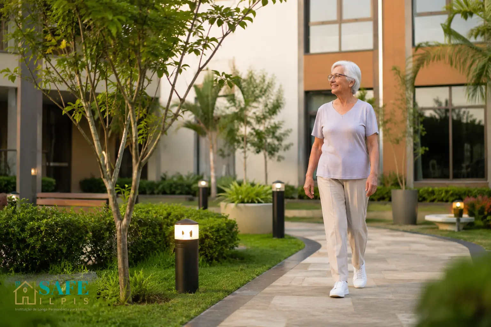

Uma cidade com estrutura urbana sólida, acesso facilitado e residenciais que oferecem qualidade real. Entenda por que Osasco se tornou uma das regiões mais procuradas por famílias da Grande SP.

A busca por uma casa de repouso raramente começa de forma planejada. Ela surge depois de uma conversa difícil, de uma queda, de um retorno ao apartamento que revelou algo que a família preferiu não ver. E quando começa, a família está emocionalmente cansada — e precisa de clareza, não de catálogos.
Osasco ocupa uma posição especial nesse cenário. Para famílias que vivem em bairros da Zona Oeste de São Paulo, em municípios como Barueri, Jandira, Carapicuíba ou na própria Osasco, a cidade oferece o que a capital central raramente consegue: residenciais com mais espaço, equipes acessíveis, custo operacional equilibrado e acesso viário que torna as visitas parte natural da semana.
Este guia foi escrito para que você entenda o que existe em Osasco, o que perguntar, o que avaliar — e como a SAFE ILPIS pode simplificar esse processo completamente.
Não é por acaso que Osasco aparece com frequência nas buscas de famílias que vivem na Zona Oeste de São Paulo. A cidade tem infraestrutura urbana completa — comércio, hospitais de referência, transporte diversificado — e uma malha viária que conecta facilmente com diferentes municípios da Grande SP.
Para a família que visita regularmente, isso importa muito. A facilidade de acesso define, na prática, a frequência das visitas. E a frequência das visitas define a qualidade da presença — que é o que mais conta.
"A pergunta não é se Osasco é longe. A pergunta é: se a visita vai acontecer toda semana, qual é o caminho que você consegue fazer com prazer — e não por obrigação?"— Equipe SAFE ILPIS
Os valores em Osasco estão, em média, entre 15% e 25% abaixo dos residenciais equivalentes em bairros como Pinheiros, Perdizes ou Santana — sem diferença relevante na qualidade do cuidado. O que muda é o custo do espaço físico e o overhead operacional da região.
O principal fator que determina a mensalidade, em Osasco ou em qualquer outra cidade, não é a localização. É o grau de dependência da pessoa.
Na comparação direta: para um perfil de Grau 2, o cuidado domiciliar em Osasco pode custar cerca de R$ 4.000 a mais por mês do que um residencial — com menos cobertura e maior risco nos períodos descobertos. Veja a análise completa em Quanto custa uma cuidadora em casa em 2026.
Avaliamos cada parceiro antes de indicar — espaço, equipe, protocolos e transparência com as famílias. Você não precisa fazer esse trabalho sozinho.
Para famílias que chegam pela SAFE ILPIS, conseguimos descontos exclusivos de até R$ 500/mês na mensalidade.
Existe uma diferença significativa entre residenciais — e ela não está sempre refletida no preço. Conhecemos pessoalmente os espaços que indicamos em Osasco. O que diferencia os melhores é estrutura, cultura e transparência.
Corrimões, pisos antiderrapantes, quartos seguros e espaços projetados para reduzir riscos de queda — não adaptados depois, mas pensados desde o início.
Cuidadoras, técnicos de enfermagem e coordenação presentes em todos os turnos — sem turno descoberto, sem plantão improvisado no fim de semana.
Cardápio elaborado com nutricionista, refeições adequadas ao perfil clínico e monitoramento de ingestão — especialmente importante para perfis de Grau II e III.
Grupos de convivência, estimulação cognitiva, fisioterapia, música e atividades físicas adaptadas — estruturadas para preservar capacidade e propósito.
Relatórios para a família, acesso a prontuário e política de visita aberta — em qualquer horário, sem aviso prévio. Sinal claro de qualidade.
Procedimento documentado, equipe treinada e comunicação imediata com a família em qualquer ocorrência — a resposta não depende de improviso.
A maioria das famílias da região que nos procura não planejou a busca. Chegaram depois de um episódio que não podiam mais ignorar. Mas os sinais estavam ali há mais tempo.
Reconhecer esses sinais com antecedência não é apressar uma decisão — é ter tempo para tomar a decisão certa, sem pressão.
A cuidadora vai embora às 18h. O que acontece entre a meia-noite e as seis da manhã não tem resposta clara.
As visitas já não são presença — são operação. A família está gerindo uma estrutura de cuidado sem estrutura.
O que começou como auxílio parcial agora exige atenção em praticamente todos os momentos do dia.
Comprimidos esquecidos, dosagem duplicada ou horários irregulares — sinais claros de que a pessoa precisa de supervisão estruturada.
Para famílias que moram em diferentes pontos da Grande SP, a escolha entre Osasco e municípios vizinhos depende de distância, orçamento e perfil de cuidado. Veja um panorama rápido:
| Região | Custo médio mensal | Ponto forte | Acesso |
|---|---|---|---|
| Osasco | R$ 3.500 – R$ 9.000 | Melhor custo-benefício urbano | Marginal + CPTM linha 8 |
| Cotia / Granja Viana | R$ 4.000 – R$ 10.000 | Espaço amplo, natureza | Raposo Tavares + Rodoanel |
| Alto da Lapa | R$ 5.000 – R$ 12.000 | Dentro da capital, bairro tranquilo | Zona Oeste capital |
| Butantã | R$ 4.500 – R$ 11.000 | Polo hospitalar próximo | Zona Oeste capital |
| Embu das Artes | R$ 3.200 – R$ 8.000 | Custo menor, ambiente calmo | Régis Bittencourt |
| Vargem Grande Paulista | R$ 3.000 – R$ 7.500 | Mais acessível, área verde | Raposo + SP-250 |
Nosso ponto de vista: a localização é um fator — mas não o mais importante. Uma família que visita com frequência tolera mais distância do que imagina. O que não tolera é descobrir, depois de instalada, que a estrutura não era o que parecia. Por isso avaliamos presencialmente antes de indicar.
"Quando o cuidado é feito no lugar certo, a visita volta a ser presença.— Equipe SAFE ILPIS
Não mais uma operação. Só amor — com tempo de sobra."
Desde a primeira conversa até a chegada no residencial, nossa equipe acompanha cada etapa. O processo é simples — porque fizemos questão de simplificar.
Você conta sobre o seu familiar: perfil, necessidades, localização preferida e faixa de orçamento. Duração média: 20 minutos pelo WhatsApp.
Identificamos o grau de dependência, as necessidades de suporte e os critérios que não são negociáveis para aquele perfil específico.
Apresentamos as opções que fazem sentido — não catálogos genéricos. Cada indicação vem com o que sabemos sobre o espaço, a equipe e a experiência de outras famílias.
Orientamos o que perguntar, o que observar e como comparar. E, quando a decisão está tomada, ativamos o desconto exclusivo para a família.
Uma conversa com a equipe SAFE ILPIS é suficiente para clarear as opções e dar o primeiro passo com segurança.